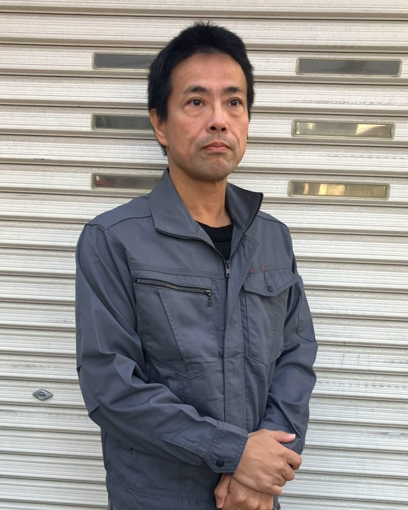

組立の現場で、こんなことはありませんか
- ベテランごとに組み方が違い、品質がバラつく
- 新人が一人立ちするまでに、何か月もかかる
- 外国人スタッフに、急所がうまく伝わらない
- 手順書はあるが文字ばかりで、ラインでは開かれていない
現場出身だからできること
書類を作る人ではなく、
現場で一緒に手を動かす人です
-
生産技術20年だから
品質を決める「急所」が分かる
締め付け、はめ合い、はんだ付け。不良の原因になりやすい動作を見つけ、理由と一緒に手順書に書きます。
-
海外工場で5年働いたから
言葉が違っても伝わる書き方ができる
写真と短い文で、一つの動作を一つの文にします。やさしい日本語で、外国人スタッフにも伝わる形にします。
-
自分でも作業してみるから
現場で本当に使われる
書いたあと、実際にその手順で作業してみます。作業者の方にも試してもらい、その日のうちに直します。
手順書の見本
写真で見せて、急所に印を付けます
文字を読まなくても、どこを見て何に気をつけるかが分かる手順書にします。
| No | 手順 | 急所 | その理由 |
|---|---|---|---|
| 1 | 部品を左手で押さえ、治具にセットする | 治具の右側に押し当てる | 位置がずれると穴が合わない |
| 2 | ボルトを手で仮締めする | 最初の2回転は手で回す | ねじ山を傷めないため |
| 3 | トルクレンチで本締めする | 「カチッ」と鳴るまで締める | 締め付け不足を防ぐため |
書式は、現場でいま使っているものに合わせます。
- 作業者の目線で撮る。正面からではなく、作業する人に見えている向きで撮ります。
- 見る所を丸で囲む。1枚の写真で伝えることは一つにします。
- 吹き出しは短く。パソコンに入っている機能で付けるので、社内でも直せます。
書き方も、こう変えます
ボルトを適切に締める。
トルクレンチで「カチッ」と鳴るまで締める。
傷に気をつけてください。
部品は手袋をした手で、側面を持つ。表面に触らない。
部品をセットし、仮締めしてから本締めする。
一つの動作を一つの文に分ける（セットする／仮締めする／本締めする）。
現場での1日
1日で、1工程分の手順書を仕上げます
60秒ほどの繰り返し作業なら、1日で1工程分を仕上げます。
作業を見る午前
ラインの横で、何人かの作業を見比べます。人による違いがどこにあるかを探します。
作業者の方に聞く
「ここはなぜこうするのか」を、ベテランの方から聞き出します。
作業を分けて、急所を決める
作業を動作ごとに分け、品質と安全に効く急所を選びます。
写真を撮って、手順書にまとめる午後
作業者の目線で写真を撮り、急所に印を付けてまとめます。
その手順で作業してみる
自分で試し、作業者の方にも試してもらいます。分かりにくい所はその場で直します。
料金
作業手順書づくりサポート
50,000円 ／1日（税別）
交通費込み（愛知県・岐阜県内）
- オンラインでの事前相談（30分・無料）
- 現場での作業観察・聞き取り・写真撮影
- 1工程分の作業手順書（Excel／PowerPointのデータでお渡し）
- 作り方のコツのお伝え（2本目から社内で作れるように）
- 1か月後のフォロー
ご依頼の流れ
お話を聞いたうえで、合わないと感じたらお断りいただいて構いません。
- お問い合わせフォームから
- 無料相談オンラインで30分
- 日程と作業を決める対象の工程を選びます
- 現場で作成1日
- 仕上げ・納品1週間以内
担当者について

山下 毅彦
合同会社サンセットオレンジ 生産技術担当
自動車部品メーカーで生産技術を20年
自動機の不具合改善、画像検査装置の選定・導入、工数削減、はんだ付けの品質改善と指導を担当してきました。
アメリカ・ミシガン州の工場に5年
言葉や習慣の違うスタッフと、ライン立ち上げや作業指導をしてきました。
いまは、中小の組立工場の力に
現場で身につけたことを、手順書づくりを通じて皆さまの現場で活かします。
こんなこともご相談ください
- 治具・工具屋さんを紹介してほしい
- 治工具の構想を考えてほしい
- 事務作業を減らしたい
対応について
- エリア：愛知県・岐阜県
- 対応日：平日・土曜
- 秘密保持契約（NDA）に対応します
よくあるご質問
写真を撮れない現場でも頼めますか
はい。撮影の範囲は事前にご相談します。撮れない所は図やイラストで描きます。
1日で終わらない作業はどうなりますか
事前相談で作業の長さを伺い、何日かかるかをお見積りします。分けて進めることもできます。
いま使っている手順書の書式に合わせられますか
はい。御社の書式に合わせて作ります。書式がなければ、こちらでご用意します。
秘密は守ってもらえますか
秘密保持契約（NDA）を結んでから伺います。写真やデータは納品後にこちらでは残しません。
まずは、困っている作業を教えてください
オンラインで30分ほど、無料でお話を伺います。手順書にするか迷っている段階でも構いません。
合同会社サンセットオレンジ 担当：山下 毅彦
メール：ytakehico@gmail.com
自家焙煎コーヒーも販売しています
サンセットオレンジでは、自家焙煎のコーヒーをオンラインで販売しています。販売サイトを見る